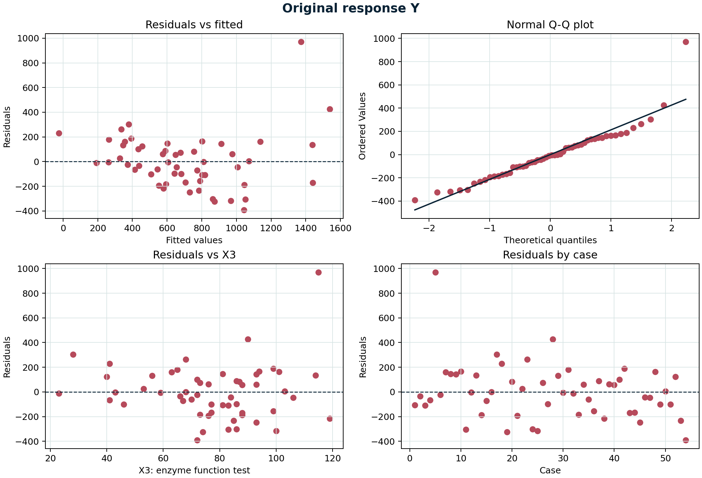
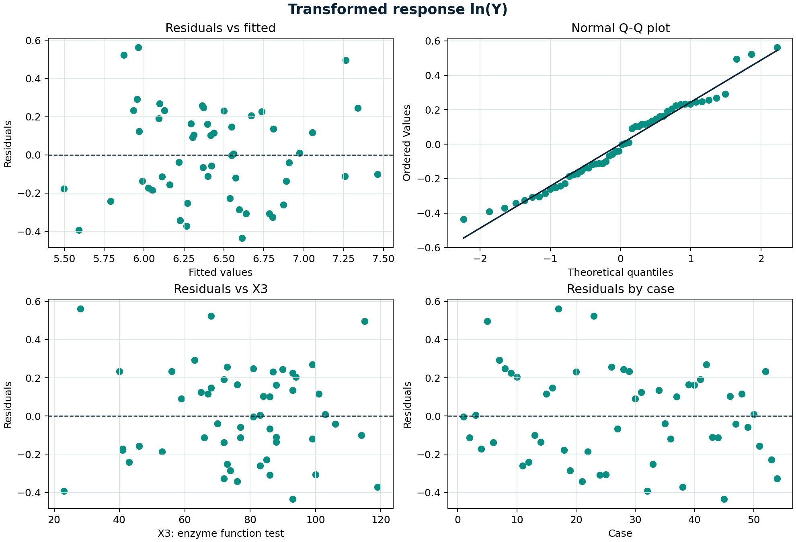
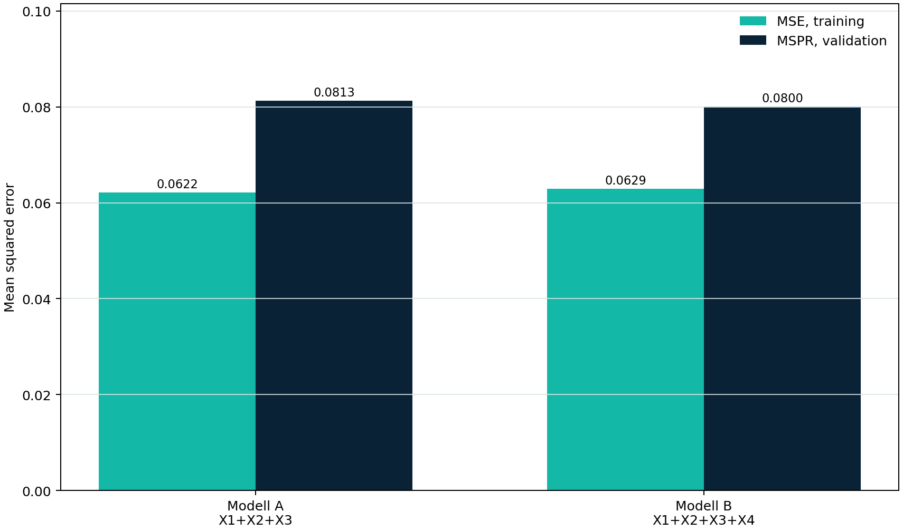

Building the Regression Model I:
Model Selection and Validation
En styrd analys av Surgical Unit med fyra prediktorer. Vi börjar på den ursprungliga Y-skalan, granskar diagnosgraferna och motiverar först därefter transformationen till ln(Y). Sedan genomförs all subsets, forward och backward selection samt oberoende validering.
Efter labben kan du...
Jämför residualerna före och efter ln(Y).
All subsets samt forward och backward med AIC.
MSE, MSPR och fullständiga summary-utskrifter.
54 patienter bygger modellen och 54 nya patienter testar den
En kirurgisk enhet vill prediktera överlevnadstid efter en viss leveroperation. Valideringsgruppen hålls utanför hela modellvalsprocessen.
| Variabel | Innehåll | Roll |
|---|---|---|
| X₁ | Blood clotting score | Prediktor |
| X₂ | Prognostic index | Prediktor |
| X₃ | Enzyme function test score | Prediktor |
| X₄ | Liver function test score | Prediktor |
| Y | Survival time | Respons |
54 obs. betyder att träningsmaterialet innehåller 54 patienter. De fyra kolumnerna x1–x4 utgör variabelpoolen, medan y och lny är samma respons på två olika skalor. Modellvalet görs endast med träningsdata; de andra 54 patienterna sparas till en oberoende kontroll.
Transformationen ska vara ett resultat av diagnostiken, inte ett automatiskt första steg. Därför skattas först den fulla modellen på den ursprungliga skalan.
Det övergripande F-testet är signifikant (p = 5,70·10−12), så minst en prediktor är relaterad till Y. Modellen förklarar 69,1 % av variationen i överlevnadstid, och justerat R² är 66,6 % efter hänsyn till fyra prediktorer.
X₁, X₂ och X₃ har positiva och statistiskt signifikanta koefficienter. X₄ är däremot inte signifikant när de andra variablerna hålls konstanta (p = 0,300). Detta räcker ändå inte för att godkänna modellen: residual standard error är cirka 230 tidsenheter och residualerna måste granskas innan testerna och standardfelen kan anses tillförlitliga.
R-skript för diagnosgraferna med Y

- Residuals vs fitted: spridningen ökar vid större fitted values och en observation ligger nära +1 000. Ett sådant funnel-mönster talar mot konstant felvarians.
- Normal Q-Q: punkterna följer linjen i mitten men den övre svansen böjer kraftigt uppåt. Det visar högerskevhet och en ovanligt stor positiv residual.
- Residuals vs X₃: residualerna ligger inte som ett jämnt slumpmoln runt noll. Vid större X₃ förekommer både större spridning och den extrema positiva residualen.
- Residuals by case: ingen tydlig tidsordning syns, men ett fåtal fall avviker markant. Dessa fall kan få stor påverkan på skattning och standardfel.
Samlad bedömning: det är framför allt ojämn varians och bristande normalitet som gör Y-skalan olämplig. Därför prövas ln(Y), i linje med diagnostiken i Kutners Figure 9.2.
Transformera till ln(Y) och gör om diagnostiken
Efter transformationen ökar R² från 0,691 till 0,759 och residual standard error blir 0,251 på log-skalan. Det övergripande F-testet är starkt signifikant, vilket visar att modellen som helhet innehåller prediktionsinformation.
När övriga variabler hålls konstanta motsvarar koefficienterna ungefär en förändring i Y på 8,7 % per enhet X₁, 1,3 % per enhet X₂ och 1,6 % per enhet X₃. X₄ har fortfarande ett litet unikt bidrag: p = 0,535. Procenttolkningarna är 100·(exp(b)−1) och gäller exakt för en enhets ökning på den log-linjära skalan.
R-skript för diagnosgraferna med ln(Y)

- Residuals vs fitted: residualernas vertikala spridning är nu betydligt jämnare över hela intervallet. Det tidigare funnel-mönstret har minskat tydligt.
- Normal Q-Q: de flesta punkter ligger nära referenslinjen. Små avvikelser finns i svansarna, men den kraftiga högerskevheten på Y-skalan är borta.
- Residuals vs X₃: inget tydligt systematiskt samband återstår. Det stödjer en linjär representation av X₃ i modellen.
- Residuals by case: positiva och negativa residualer blandas utan en tydlig följd. Några relativt stora residualer finns kvar och bör observeras, men de dominerar inte längre skalan.
Samlad bedömning: ln(Y) ger en mer rimlig felstruktur. Transformationen garanterar inte perfekta antaganden, men diagnostiken är tillräckligt förbättrad för att gå vidare med modellval.
Full korrelationsmatris efter transformationen
X₃ och X₄ har starkast marginal korrelation med ln(Y): 0,654 respektive 0,649. Det betyder att de var för sig har tydliga positiva samband med responsen. X₁ har den svagaste marginala korrelationen, 0,246, men kan ändå bidra när övriga variabler hålls konstanta.
X₄ korrelerar samtidigt med X₁ (0,502), X₂ (0,369) och X₃ (0,416). X₄ överlappar därför information som redan finns i de andra prediktorerna. Det förklarar varför X₄ kan ha hög korrelation med ln(Y) men ändå bli icke-signifikant i den multipla modellen. Korrelationsmatrisen ensam avgör alltså inte vilka variabler som ska ingå.
Fyra prediktorer ger 16 möjliga modeller
Alla kombinationer av X₁–X₄ undersöks med ols_step_all_possible() i paketet olsrr. Funktionen redovisar bland annat R², justerat R², Mallows Cₚ, AIC och SBC.
Visa komplett subset-skript
ols_step_all_possible() skriver ut de 15 modeller som innehåller minst en prediktor. Tillsammans med interceptmodellen blir det teoretiska antalet 2⁴ = 16 modeller.| Antal X | Bästa variabler | p | Adj. R² | Cₚ | AIC | SBC | PRESS |
|---|---|---|---|---|---|---|---|
| 0 | Intercept | 1 | 0,0000 | 151,4975 | −75,7025 | −73,7135 | 13,2956 |
| 1 | X₃ | 2 | 0,4166 | 66,4889 | −103,8269 | −99,8489 | 8,3267 |
| 2 | X₂, X₃ | 3 | 0,6501 | 20,5197 | −130,4833 | −124,5163 | 5,0653 |
| 3 | X₁, X₂, X₃ | 4 | 0,7427 | 3,3905 | −146,1609 | −138,2049 | 3,9142 |
| 4 | X₁, X₂, X₃, X₄ | 5 | 0,7396 | 5,0000 | −144,5895 | −134,6446 | 4,0686 |
Den största förbättringen sker först när X₂ läggs till X₃: justerat R² stiger från 0,417 till 0,650 och PRESS minskar från 8,327 till 5,065. När X₁ därefter läggs till stiger justerat R² vidare till 0,743 och PRESS sjunker till 3,914. X₁ ger alltså ett tydligt bidrag trots sin svaga marginala korrelation med ln(Y).
Modellen X₁+X₂+X₃ har högst justerat R², lägst Cₚ, lägst AIC och SBC samt lägst PRESS bland de redovisade kandidaterna. För AIC och SBC betyder ett mer negativt värde ett mindre värde och därmed bättre balans mellan anpassning och modellstorlek.
När X₄ läggs till stiger vanligt R² endast från cirka 0,757 till 0,759, medan justerat R² sjunker till 0,740 och PRESS ökar till 4,069. Den lilla förbättringen i anpassning räcker alltså inte för att kompensera för en extra parameter. Detta är den straffeffekt som finns i justerat R², AIC och SBC.
Genomför både forward och backward selection
1 → X₃ → X₃+X₂ → X₃+X₂+X₁Startar med interceptmodellen och lägger till den variabel som sänker AIC mest.
X₁+X₂+X₃+X₄ → X₁+X₂+X₃Startar med full modell och tar bort den variabel som förbättrar AIC mest.
Forward väljer först X₃ eftersom det ger den största första AIC-förbättringen. AIC minskar sedan tydligt när X₂ och X₁ läggs till: −75,70 → −103,83 → −130,48 → −146,16. Ingen ytterligare sänkning erhålls av X₄, så sökningen stannar.
Backward börjar med alla fyra prediktorer. När X₄ tas bort minskar AIC från −144,59 till −146,16, vilket betyder att den enklare modellen är bättre enligt AIC. Att båda riktningarna och all subsets landar i X₁+X₂+X₃ ger ett konsekvent modellvalsresultat.
Jämför både prediktionsfel och fullständiga summary-utskrifter
ln(Y) ~ X₁+X₂+X₃Vald av all subsets, forward och backward.
ln(Y) ~ X₁+X₂+X₃+X₄Kontrollerar om X₄ ger något stabilt mervärde.
Koefficienterna från träningsdata används för att prediktera de 54 nya patienterna. MSPR beräknas direkt, utan en egen function.
För Modell A ökar det genomsnittliga kvadrerade felet från MSE = 0,0622 i träningsdata till MSPR = 0,0813 i valideringsdata. För Modell B är motsvarande värden 0,0629 och 0,0800. Att MSPR är högre än MSE är väntat eftersom valideringspatienterna inte användes när koefficienterna skattades.
Ökningen är cirka 31 % för Modell A och 27 % för Modell B, men modellerna har nästan samma externa prediktionsfel. Skillnaden i MSPR är bara 0,0013 på log-skalan, ungefär 1,6 % av Modell A:s MSPR. Resultatet visar därför inte någon meningsfull prediktionsvinst av X₄.
R-skript för MSPR-grafen

Grafen ska läsas inom varje modell och sedan mellan modellerna. Inom båda modellerna ligger MSPR över MSE, vilket visar att träningsfelet är något optimistiskt. Mellan modellerna är staplarna nästan lika höga. X₄ förbättrar alltså inte den externa prediktionen tillräckligt för att motivera en större modell.
Jämför summary(): Modell A
Alla tre koefficienter är positiva i båda dataseten. X₁ ändras endast från 0,0955 till 0,0983 och X₃ från 0,0165 till 0,0148. X₂ ökar från 0,0133 till 0,0166, men riktning och storleksordning är desamma. Alla tre prediktorer är fortfarande signifikanta i valideringsdata.
R² sjunker från 0,757 till 0,684 och residual standard error ökar från 0,249 till 0,286. En viss försämring på nya data är väntad. Det viktiga här är att förklaringsgraden fortfarande är tydlig och att koefficienternas tecken och storlekar är stabila. Detta ger stöd för att Modell A kan generaliseras till nya patienter.
Jämför summary(): Modell B
X₄ är positiv i båda dataseten, men skattningen är osäker: 0,032 med standardfel 0,051 i träningsdata och 0,054 med standardfel 0,059 i valideringsdata. P-värdena 0,535 och 0,364 ger inget stöd för ett självständigt bidrag från X₄ när X₁–X₃ redan ingår.
Modell B får något högre vanligt R² än Modell A, eftersom R² aldrig minskar när en variabel läggs till. Justerat R² är däremot lägre för Modell B i både training (0,740 mot 0,743) och validation (0,664 mot 0,665). Tillsammans med nästan identisk MSPR visar detta att X₄ ökar komplexiteten utan en tydlig praktisk förbättring.
Analysordningen är en del av slutsatsen
Kontrollfrågor för studenter
- Vilka mönster i diagnosgraferna motiverar ln(Y)?
- Varför minskar inte justerat R² automatiskt när en relevant variabel läggs till?
- Varför kan forward och backward i allmänhet ge olika slutmodeller?
- Vad mäter MSPR som MSE i träningsdata inte mäter?
- Varför väljs Modell A trots att Modell B har marginellt lägre MSPR?